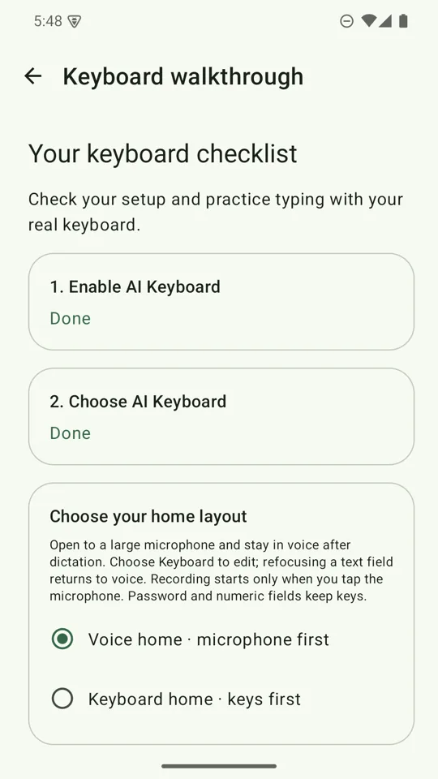

Free Android keyboard
Speak it. Fix it. Switch languages in one tap.
AI Keyboard puts a real writing pipeline above your keys: dictate, watch the text come back clean, rewrite a whole message with one hold, and type Japanese and Chinese right on your phone.
The app is free. Bring your own Groq or Gemini key, or stay fully on your phone.


- Free app
- No account
- Your own key, or none
- Offline voice and typing
The keyboard for people who talk, fix, and switch languages
Everything runs from the keyboard itself, in any app. No copy-paste trips, no separate assistant to open.
Voice, your way
Dictate with Groq Whisper, Gemini Live, the Android speech service, or fully offline with SenseVoice. A badge shows which model did the work.
Rewrite in one hold
Hold a writing-style chip and the whole message is rewritten in place, after a preview, with a five-second Undo.
One tap, another language
Dictate in Japanese, send in English. The Language Chip re-runs the same text in the language you pick.
Your key, your data
There is no AI Keyboard server. Text and audio go straight from your phone to the provider you chose, or never leave it.
What's in version 2.2
A fresh green design, a keyboard that can start with your voice, and Japanese and Chinese typing that never leaves your phone.
Start with your voice, or with your keys
Choose Voice home and the keyboard opens to a large microphone with one full-width Keyboard button, so a message can start by speaking and finish by typing.
Nothing records until you tap, and password and number fields always keep their keys. Prefer keys first? That is how the keyboard starts until you opt in.
Voice typing that hears whole sentences, even offline
Groq Whisper large-v3 transcribes pause-aligned 20–30 second chunks while you speak. Gemini 3.1 Flash Live streams a transcript and writes Japanese and Chinese without stray spaces. The Android speech service works with no key at all.
Or download the SenseVoice pack once (about 228 MiB) and dictate with no network and no API key. Japanese, Mandarin, Korean, Cantonese and English are supported, the panel fills with live draft text while you speak, and your audio stays on your phone.

Fix the whole message with one hold
Hold a writing-style chip and the keyboard rewrites everything in the text box. Fix grammar, go professional, make bullet points, summarise, or turn rambling into a reply you can send or a to-do list.
You get a preview first. Tap Replace and it is rewritten in place, with a five-second Undo. It refuses in password, email, phone and other sensitive fields.
Type Japanese and Chinese on your phone
Switch with the globe key beside the space bar. Type Japanese in romaji, or Traditional or Simplified Chinese in pinyin, and pick from conversion candidates above the keys.
It runs entirely on the device: no network, no key, and it works in airplane mode.


Answer in another language, from one tap
Every result names the language it came back in. Tap the Language Chip to switch and re-run the same text. Hold and slide to jump across your shortlist of English, Japanese, Korean, Traditional or Simplified Chinese, Spanish, French, German and Portuguese.
An accidental hold costs nothing: release without sliding and you keep the language you had.

Your writing styles, in your order
Eight built-in styles ship ready: Fix Grammar, Professional, Bullet points, Casual, Concise, Summary, Reply-ready and To-do List. Drag to reorder them, or write your own.
Your saved order is shared by the typing and dictation pickers, and new styles are added at the end, never over yours.
Set up in minutes, then practise
A guided walkthrough helps you enable and choose the keyboard, then lets you practise in a real text box. No key and no download are needed to start typing. Come back to it any time from Settings.

See it in action
Real screens from the app, in the green Sprout design.
Typing help that never touches the network
A suggestion strip offers words as you type, obvious typos fix themselves on space, and the next word is offered before you type it. One backspace undoes a fix and teaches the keyboard to leave that word alone. Words you teach it never leave your phone.
Digits under your thumb
Hold a top-row key for its digit, q for 1 through p for 0. No trip to the 123 page.
A punctuation palette
Hold . or , for sixteen marks. Slide to one and lift. Release without moving and you simply get the key you pressed.
Backspace that hurries
A held backspace starts on characters and switches to whole words after about a second. A tap always deletes exactly one.
Your key, your data
AI Keyboard has no server of its own, and the app is free. Cloud dictation and writing styles go directly from your phone to the provider you chose, using your own key. Offline SenseVoice, the on-device writing model, and Japanese and Chinese typing stay on your phone.
- Keys are stored encrypted on the device.
- Audio is recorded only while the microphone is on.
- No audio or transcript is saved to disk.
- A built-in usage screen shows your tokens, request by request.
Ready to try it?
Install, follow the walkthrough, and you can be typing in a couple of minutes. Voice and AI features can wait until you want them.